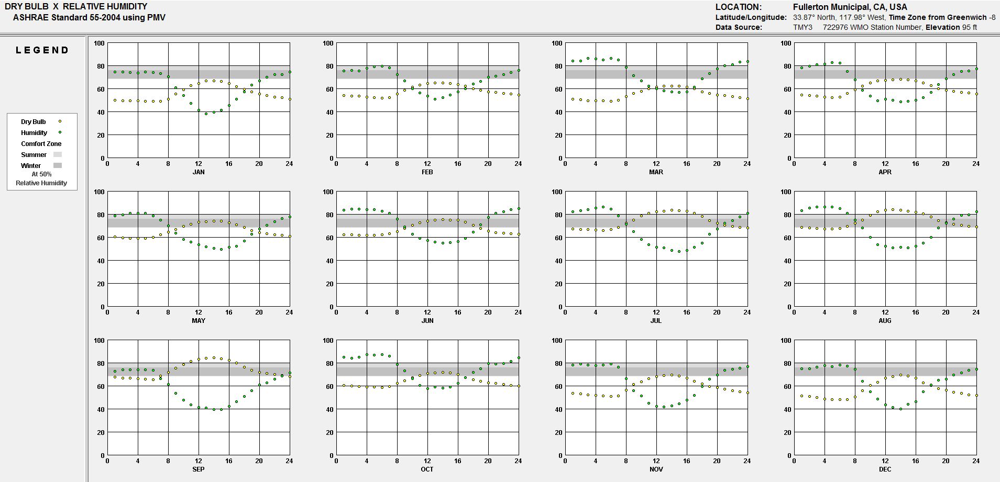
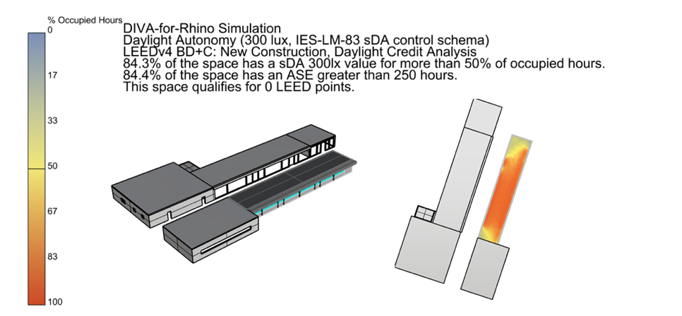
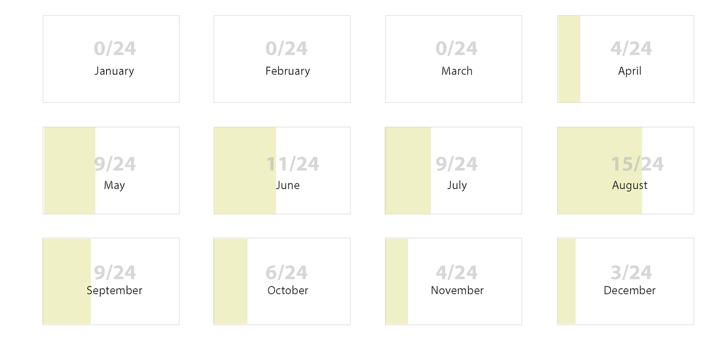
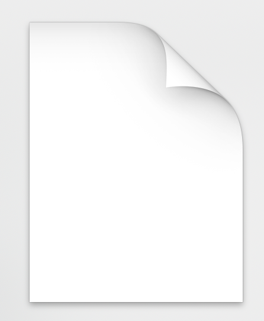
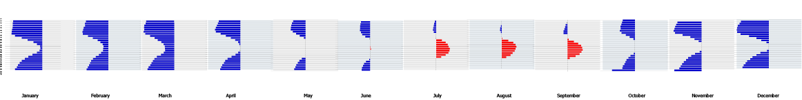

How Far From Comfort
An epw file compatible web-based data visualization tool of how comfortable a climate is. (link)
Goals
1. Make it easier for architects to understand what the climate is like.
2. Challenge Conventional Climate Visualizations.
3. Create an interactive tool.
Background
This was for a graduate seminar in the architecture department.
Required coding knowledge, but no specific Javascript knowledge.
Requirements were open as long as you were using climate epw data.
Why do we need new tools?
Many of the current tools are hard to understand

You need to read an article to understand the chart
CAD Software is also complex
i.e. Grasshopper, Honeybee, Lady Bug, DIVA 
Process
Before working in D3, I went through a process of graph overlays and analyzing data to understand what the charts were already conveying.
Graph Overlays
Overlays over Climate Consultant graphs.
New charts in illustrator and my own commentary
Discoveries from Graph Overlays
Main thing I wanted to find out was when was a climate comfortable based on a criteria.
Extremeties would require design changes in a project
Counting hours does not tell you when it's hot or cold.
Redefined Goal
To create a visualization that shows how many degrees we're away from the comfort zone given a specific time for a location.
Needed a mechanism that showed:
1. When it's not comfortable
2. When it's too hot or too cold
3. By how much
(Actual temperature did not matter to me.)
Data to Use

1. Values from epw file(dry bulb temp, dew point temp, rel humidity, etc.)
(Our professor provided a package that parsed EPW file data for us already.)
2. Formula (in this case comfort is a range (i.e., low < x < high))
Python, Excel, Illustrator
Preliminary experiments
Positive Negative Bar Chart
July - Fullerton, California Example
The horizontal bar chart was a winner:
1. You can easily see when it's too hot versus too cold (right vs left)
2. You can see hourly trends in a month (during the summer it's too hot during the day, early morning/ late night is very cold, etc.)
3. You can compare hours looking horizontally.
4. If you see more ink, you know to pay more attention to those times.
(But be aware of too much "bling")
First Iteration
First Iteration
September - Fullerton, California Example
Bar graph indicates how many degrees away from the comfort zone
Each bar represents the average temperature for an hour monthly that is applied to the comfort formula.
Light blue indicates it's too cold and red indicates it's too hot.
The line graph to the right of the graph is a graph of the original average temperatures.
First Iteration
The Missing Pieces
Not clear how comfortable it was day to day
Comparing across hours was difficult
(lost the advantages of a horizontal scroll)
Latest Iteration
Changes
Phoenix, Arizona Example
the top half is a heat map where you can see the temperature for each day
the more vibrant colors you see the more extreme temperatures
the bottom half is a bar graph inverted on its side denoting how far away the monthly average is away from comfort
the longer the bar, the more away from comfort
side line plot indicates the high and lows
the light gray shading indicates the average temperature ranges calculated under the comfort function to see how faraway that temp really is from comfort
Ways to Improve Visualization
Ability to set more conditions
More variables (humidity, wind speed, etc.)
Clearer visual articulation of what data is being shown
Adjust Scale
(The scale goes from -30 to 30, but many places can be more than -30C from the comfort zone (Alaska),
but for a place to be 54C (129F) isn't as likely).)
Ability to turn on and turn on functions and add more climates
Takeaways
Context is Important
Choreograph Data
Interdisciplinary Skills
Lingering Questions
What other kinds of information can we use to inform our design decisions?

( Are buildings a kind of data visualization? )